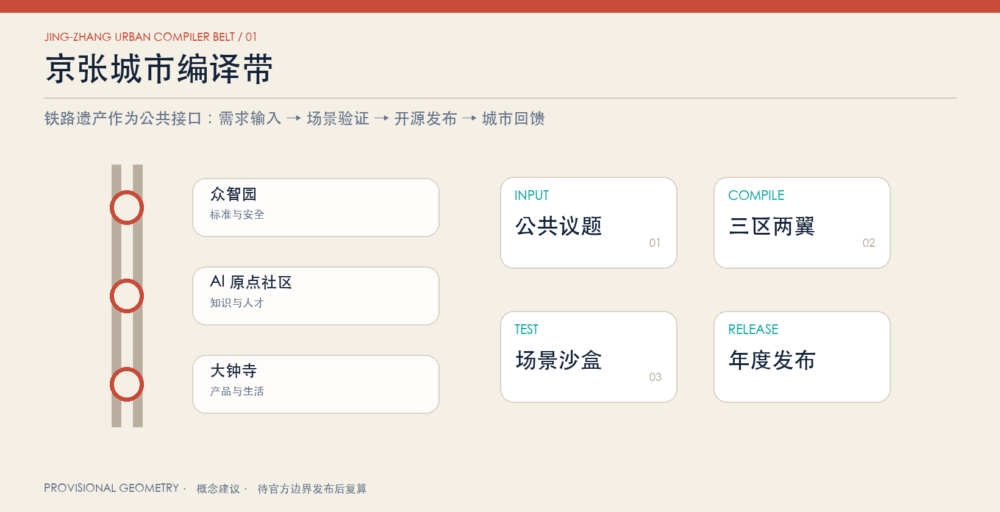
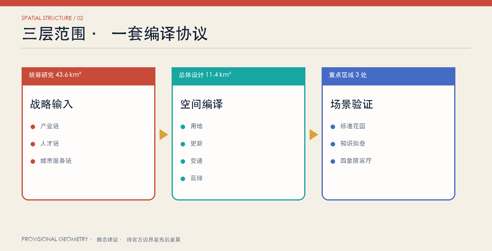
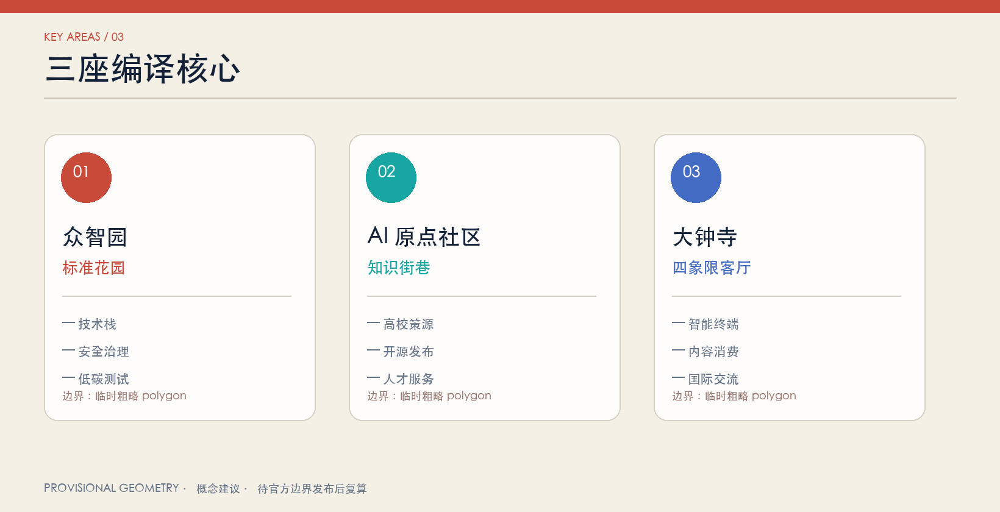
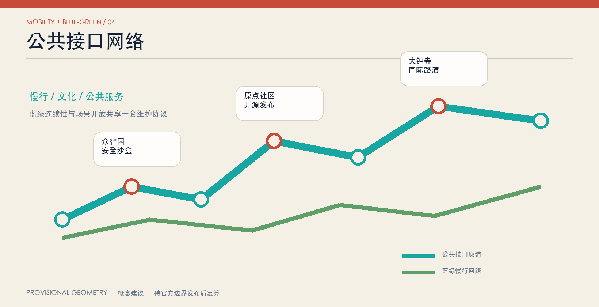

总览地图

核心指标
11.41 km²
临时边界复算 · 低置信度
12.3%
概念绿地比例
7.3%
概念公共空间比例
三层范围

重点区域

众智园
标准花园：技术栈、安全治理、低碳测试。
AI 原点社区
知识街巷：高校策源、开源发布、人才服务。
大钟寺
四象限客厅：智能终端、内容消费、国际交流。
交通慢行 · 蓝绿公共空间

用地分区 · 建筑 · 更新项目
完整用地分区以
geometry/land_use.geojson 为准。建筑基底是设计建议，不代表具体权属或拆改留结论。
六项更新抓手按近期试验、中期更新、长期治理分期。
AI 场景
开源发布厅安全治理沙盒端侧算力驿站AI慢行导航国际路演客厅低碳创新廊成果转化街数据要素会客厅生活服务样板街全球AI活动周
任务覆盖
公告 1.3 / 1.4 / 1.5：23 项全部映射
Agent 任务 1—6：命名、生态、场景、地标、文化、运营
专业深度：15 项结构化证据链
自检状态
提交前运行 deterministic validation、spatial review、visual packaging review 与 professional evidence review。最终状态以 self_check.json 为准。
来源
北京市规划和自然资源委员会海淀分局公开公告、经清权的 Agent 任务书摘录、住建部/自然资源部公开标准、本仓库 source registry。
假设
缺少官方边界、重点区精确 polygon、控规、权属、现状建筑、道路红线、市政、消防与文保附件；相应结论均降级为概念建议或待确认。